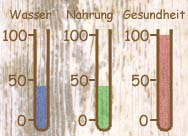
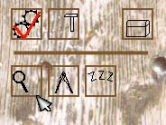
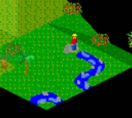
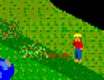
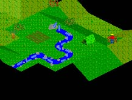
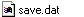

Herzlich Willkommen zu einer kurzen Einleitung in Schiffbruch. Sie dient dazu, deinen Anfang auf der einsamen Insel etwas zu vereinfachen und die wichtigsten Funktionen zu zeigen. Nach dem Startbild siehst du ein kleines Schiff durch unbekanntes Gebiet fahren. Du strandest und schwimmst an Land, nun fängt das Spiel an.

Das wichtigste in Schiffbruch sind die 3 Flüssigkeitssäulen am rechten Bildrand. Sinkt die Gesundheit auf Null wirst du sterben. Hast du genug Nahrung und Trinkwasser, steigt die Gesundheit, ansonsten sinkt sie. Also musst du dich als erstes auf die Suche nach etwas Essbarem machen und den Fluss finden.
Wenn du mit der Maus auf schon entdecktes Land (alles Schwarze ist unentdeckt) klickst, wird der geplante Weg rot eingemalt. Mit einem weiteren Klick läufst du dorthin. Wenn du an den Rand des Bildschirms kommst, kannst du mit gedrückter rechter Maustaste den sichtbaren Kartenausschnitt scrollen. Am besten läufst du als erstes ins Landesinnere, da man dort am häufigsten den Fluss findet.

Auf dem Weg wirst du mit Sicherheit an ein paar Büschen mit roten Beeren vorbeikommen. Gehe auf das Feld auf dem sie wachsen und klicke mit der Maus auf den Zahnradknopf auf der linken Seite. Damit öffnest du das Aktionsmenü. Dort klickst du auf das Messer/Gabel-Symbol, dann wirst du die Beeren von Busch essen. An dieser Stelle kannst du auch gut mal auf das Lupen-Symbol klicken, damit durchsucht du die Gegend nach brauchbaren Gegenständen. Suche so oft, bist du einen Ast gefunden hast, dann gehst du weiter bis zum Fluss.

Hast du ihn gefunden, gehst du direkt auf den Fluss und betätigst wieder das Messer/Gabel-Symbol um zu trinken. Am besten trinkst du so oft, bist deine Wasservorräte wieder aufgestockt sind.
Damit ist dein erstes Überleben sichergestellt. Jetzt wollen wir dein Leben noch etwas angenehmer gestalten. Dafür 'durchsuchst' du erst mal den Fluss, wo du wahrscheinlich ein Stein finden wirst. Jetzt gehst du ins Inventar, in dem du auf die Truhe an der rechten Seite drückst. Dort müsste nun ein Stein und ein Ast zu sehen sein. Klicke jetzt auf den Ast (der Mauscursor verwandelt sich in einen Ast) und dann auf den Stein. Es macht 'Bing' und du hast dir eine Axt gebaut.

Damit kannst du zu einem Baum laufen und im Aktionsmenü die Baumfälleanimation anklicken. Schon wirst du deinen ersten Baum fällen. Wenn du danach ins Inventar gehst, siehst du, dass du jede Menge Rohstoffe bekommen hast. Jetzt gehst du auf ein freies, flaches Stück Land, gehst ins Baumenü (der Hammerknopf) und klickst das Zelt an.

Nach einer Weile steht dein neues Zelt. Eine Egge baust du wieder aus einem Stein und einem Ast im Inventar. Damit kannst du neben dem Fluss ein Feld anlegen (wieder im Baumenü).
Damit hast du die Grundlagen kennengelernt. Du kannst natürlich noch viele andere Sachen bauen und Werkzeuge basteln. Die Knöpfe werden erst sichtbar, wenn du das passende Werkzeug hast.
Noch ein paar allgemeine Informationen:
Die Zeit vergeht nur, wenn du auch etwas machst, du kannst also beliebig lang dumm in der Gegend rumstehen. Die Zeit wird unten/rechts angezeigt. Punkt sechs Uhr musst du schlafen gehen, wenn du im Freien schläfst, wird das deiner Gesundheit nicht gut bekommen, deshalb siehe zu, dass du im Zelt (oder besser) übernachtest.
In der Leiste unten am Bildschirm werden ständig nützliche Informationen eingeblendet, dort siehst du z.B. vieviele Rohstoffe ein geplanter Bau benötigt oder was ein bestimmter Knopf bewirkt.
Das eigentliche Ziel des Spiels ist es, gerettet zu werden. Deine Chance von einem vorbeifliegendem Flugzeug (nicht sichtbar) gesehen zu werden, wird rechts oben durch den Rettungsring symbolisiert. Die Zahl gibt die Chance an, am selben Tag gerettet zu werden. Diese Chance kannst du z.B. erhöhen, in dem du eine SOS-Zeichen aus Steinen legst.
Oben rechts am Rand sind die Spieloptionen: Damit kannst du das Spiel beenden, das Spiel neu starten oder den Tag neu beginnen. Wenn du das Spiel beendest, wird der Spielstand automatisch gespeichert (falls Platz im aktuellen Verzeichnis ist (ca. 2.5MB)).

Wenn du später wieder das Spiel startest, wird der Spielstand automatisch wieder geladen. Wenn du einen Spielstand behalten willst oder mehrere Spielstände speichern willst, musst du nur die 'save.dat'-Datei umbenennen oder in ein anderes Verzeichnis kopieren. Beim nächsten Spielstart wird Schiffbruch einen neuen Spielstand anlegen.
Später im Spiel solltest du mal mit einem Boot die Insel umrunden (Achtung! Tageszeit beachten), vielleicht findest du noch was interessantes. :)
Damit sollten alle Klarheiten beseitigt sein, viel Spaß!!